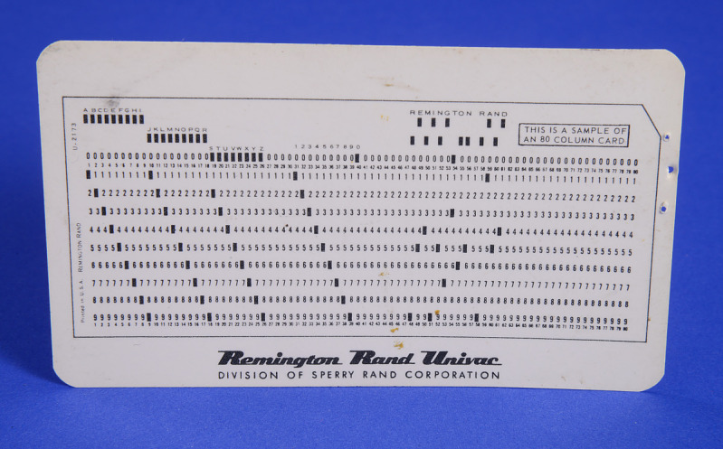

Em 1957, o Brasil entrou na era da computação com a chegada do UNIVAC 120. Este foi o primeiro computador de grande porte instalado no país, e sua casa foi a Prefeitura de São Paulo. A máquina, que ocupava uma sala inteira, marcou o início da automatização de dados em larga escala no governo.
O UNIVAC 120 foi importado para lidar com tarefas enormes e repetitivas. Suas principais funções eram calcular o IPTU (imposto) e processar a folha de pagamento de milhares de servidores municipais. Ele representou uma grande modernização e foi o ponto de partida para a formação dos primeiros técnicos em informática do Brasil.
O Funcionamento dos Cartões Perfurados
O UNIVAC 120 não tinha tela ou teclado como os computadores modernos. A entrada de dados era um processo físico que usava cartões de papel e seguia estes passos:
- Entrada: Os dados (números ou letras) eram "digitados" em uma máquina que perfurava os cartões. Cada furo representava uma informação.
- Leitura: Os cartões prontos eram colocados no leitor do UNIVAC. A máquina lia os furos mecanicamente para entender os dados.
- Processamento: O computador realizava os cálculos pedidos (somar, subtrair, etc.) com as informações que acabou de ler dos cartões.
- Saída: O resultado final era enviado para uma impressora, que imprimia os relatórios em papel (como a folha de pagamento).
